你在会话行的 ⋯ 菜单上要「title 增加 rename」。现在 Web 只能在打开的会话里双击标题栏改名，菜单里没有入口，只有鼠标停在标题上时的提示 Double-click to rename。
iOS / macOS 的会话行菜单（长按 / 右键）、iOS 会话页的 ⋯ 菜单、Android 的会话操作里都已经有 Rename，只差 Web。
下面每一张都是真实页面的截图（vite + 仓库里 ui-migration 的 fixture，侧栏照你的截图造了三条会话）：「现在」取自 main d55e9900b，「改后」是同一份代码按方案改了 WorkspaceView.tsx 和 index.css 跑出来的，不是画的。虚线和编号是标注。只改 Web，服务器不用动（改名接口早就有）。
Complete ⌘D Pin │ Share… Move… │ Delete。要改名只能先点开会话，再去双击标题。
中间这一组都是「点了会打开东西」的 … 项（输入框、分享面板、移动面板）；上面一组 Complete、Pin 点了立即生效，和手机上向右滑露出的两个按钮一一对应，原样不动。键盘 ↓ 打开菜单时焦点仍落在 Complete。
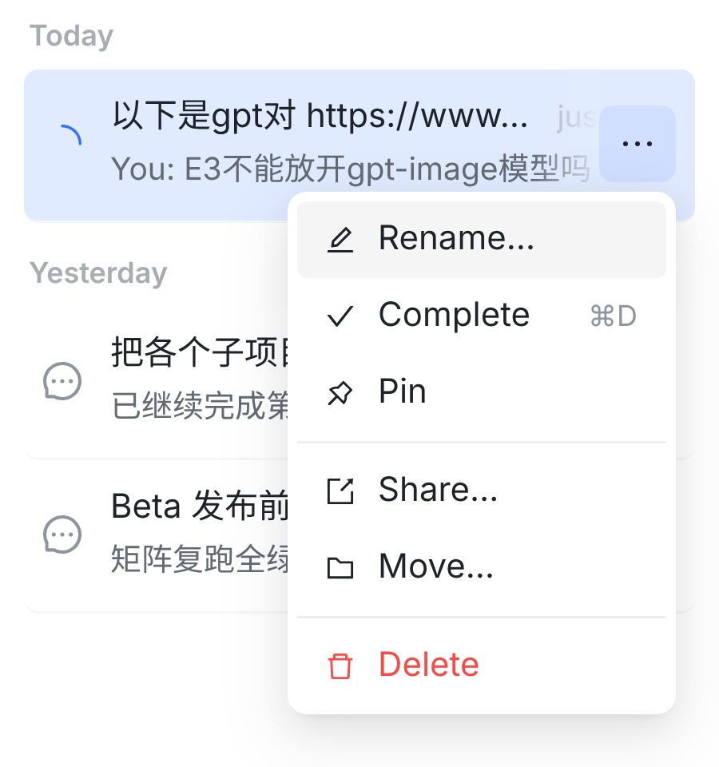
3和 iOS / macOS 行菜单的顺序一样（Rename… Pin Tags… Complete Share… Move… Delete）。代价：最常用的 Complete ⌘D 不再在最上面。
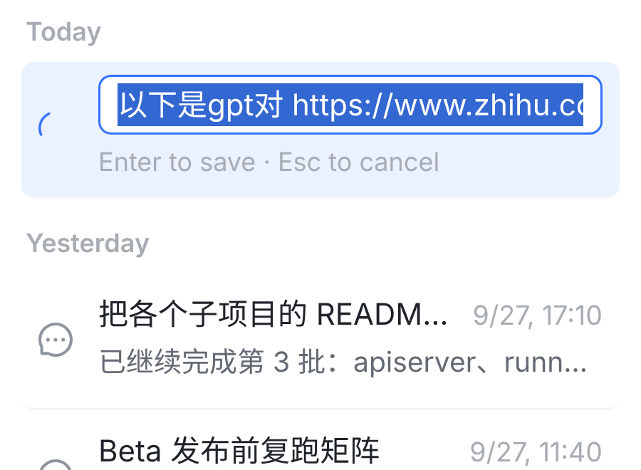
4标题那一行变成输入框，整个标题选中，从开头显示；第二行换成提示 Enter to save · Esc to cancel。输入框和提示与文件夹的 Rename… 是同一个样式、同一句话。左边的运行图标保留；时间和 ⋯ 先收起；行高不变。
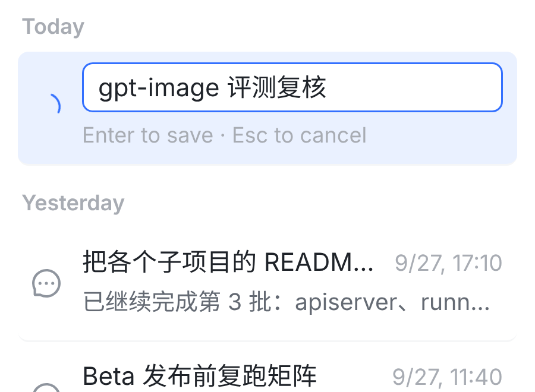
只想改一部分就先按 ← / → 取消选中。用拼音输入法时，选词按的 Enter 只选词，不会保存。
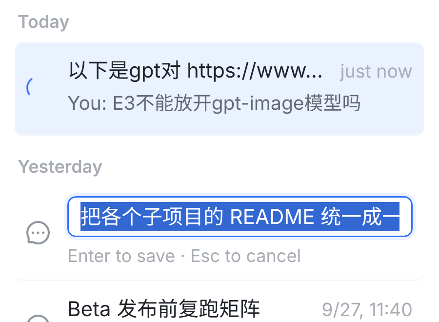
6一样在那一行里改。不会跳过去，右边的对话不动；改名时点这一行（包括点进输入框）也不会打开它。
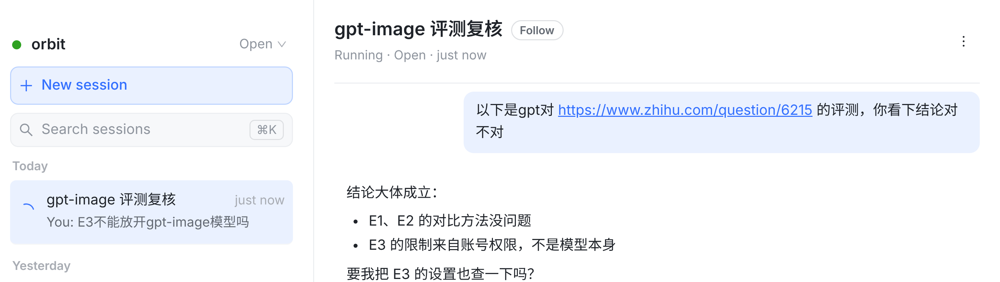
77行和右边标题栏同时变成新名字：界面先改，再等服务器确认；失败就改回原名，并提示 Couldn't rename the session（标题栏双击改名现在就是这样）。
服务器会推一条 session.updated，同一账号开着的其它网页标签和 iOS / macOS 都跟着变，不用刷新。
按 Esc：恢复原名，什么都不发（真浏览器里核对过：Enter 只发一次 PATCH /sessions/:id，Esc 一次都不发）。
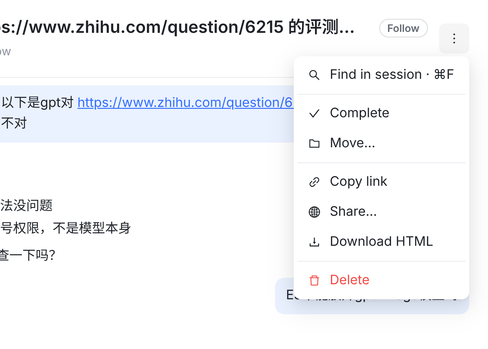
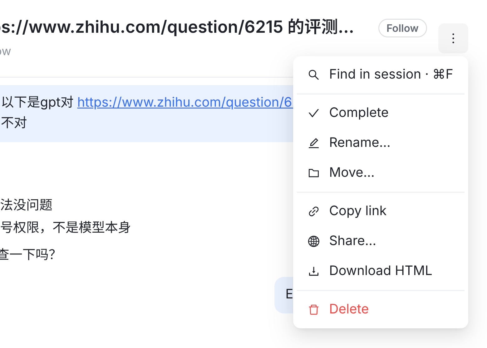
9新增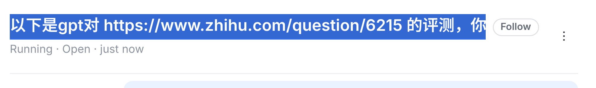
10打开的就是现在双击出来的那个编辑框（标题下面一条蓝线），规则和行里改一样。iOS 会话页的 ⋯ 菜单里，Rename… 也和 Pin、Move… 在一组。
顺带修一个现有问题：长标题现在双击打开时，Chrome 里显示的是结尾（代码注释的本意是显示开头）。改后行里和标题栏的编辑框都从开头显示，如 ④ 和 ⑩。
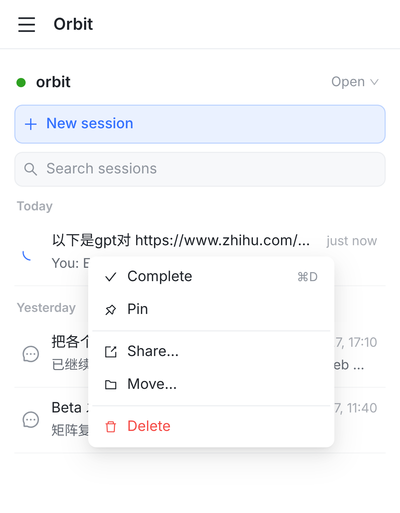
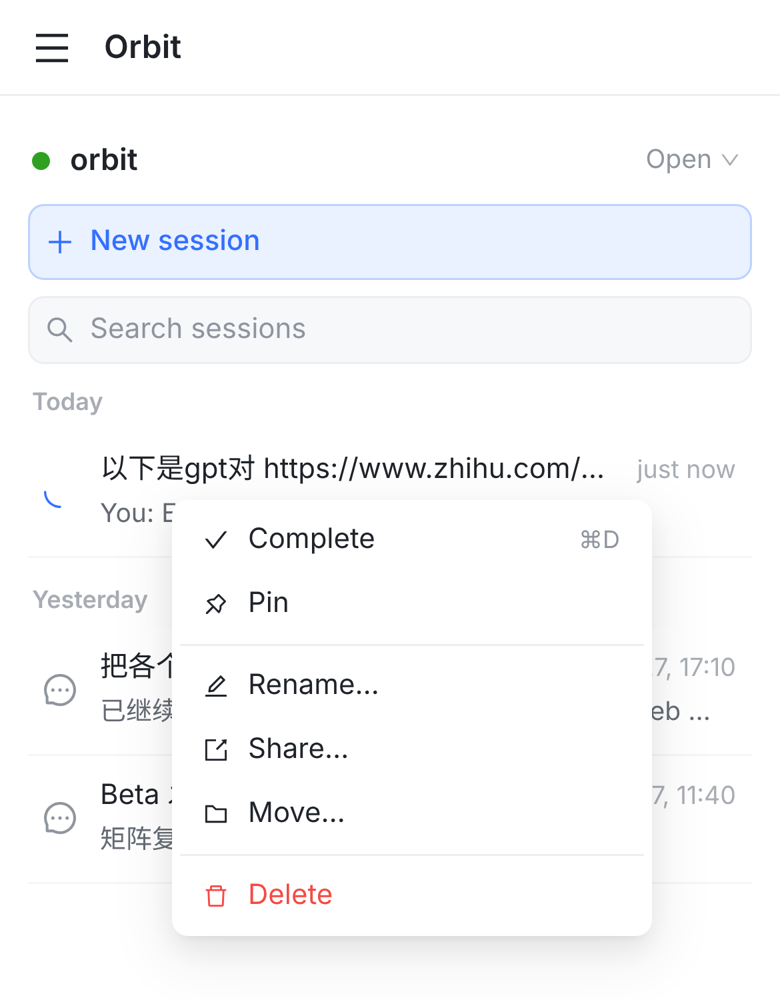
12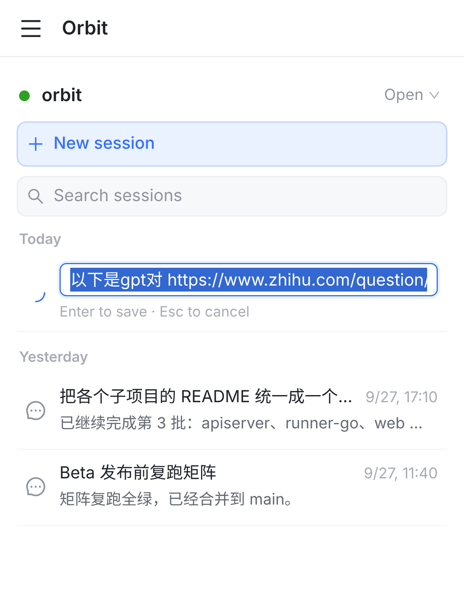
13手机上长按和桌面 ⋯ 用的是同一份菜单，Rename… 自动出现在同一个位置（⑫），不用单独做。
选了之后也在行里改（⑬），系统键盘弹起来（截图里没有键盘）。
左右滑露出的按钮里不加 Rename…：滑动是「一下就执行」，改名要打开输入框，iOS 也是这么分的。
| 情况 | 改后 |
|---|---|
| 从哪里改 | 行 ⋯ 或手机长按 → Rename…（②⑫）；标题栏 ⋮ → Rename…（⑨）；双击标题照旧 |
| 保存 | Enter 或点到别处：保存去掉首尾空格后的名字 |
| 放弃 | Esc：恢复原名，不发请求 |
| 清空了 | 不保存，恢复原名（服务器也不接受空标题） |
| 没改就回车 | 也会保存一次，和现在标题栏双击一样，意思是「这个名字我定了」：项目协调者会话从此不再跟着项目名变 |
| 长度 | 最多 200 字（服务器的上限），到 200 字就输入不进去 |
| 改名中 | 点这一行不会打开会话；⋯ 和时间收起；手机上不能左右滑 |
| 哪些行有 | Open、Completed 的会话都有；Trash 没有（和标题栏、iOS / macOS 一致）；项目那一行没有（它显示的是项目名） |
| 正在运行的会话 | 照样能改，不打断运行（改名不碰 runner） |
| 自动起的名字 | 只会替换从第一句话截出来的默认标题；你改过的名字不会被它盖掉 |
| 失败 | 改回原名，并提示 Couldn't rename the session |
src/web/src/components/WorkspaceView.tsx：行菜单加 Rename…（Trash 除外）和行里的输入框；标题栏 ⋮ 加 Rename…，打开现有的编辑框；两个编辑框打开时都从开头显示。约 +80 行。src/web/src/index.css：.session-rename、.session-row.renaming 两条，约 +10 行；输入框和提示直接用文件夹改名的 .folder-name-input / .session-folder-hint。WorkspaceView.sessionMenu.test.tsx 补菜单顺序；Rename… → 输入框 → Enter 只发一次 PATCH；Esc、清空都不发；Trash 没有；改名中点行不跳转；标题栏 Rename… 打开编辑框。PATCH /sessions/:id 已有：去首尾空格、拒绝空的和超过 200 字的、只有本人能改、推送 session.updated）；iOS、macOS、Android（都已经有）。